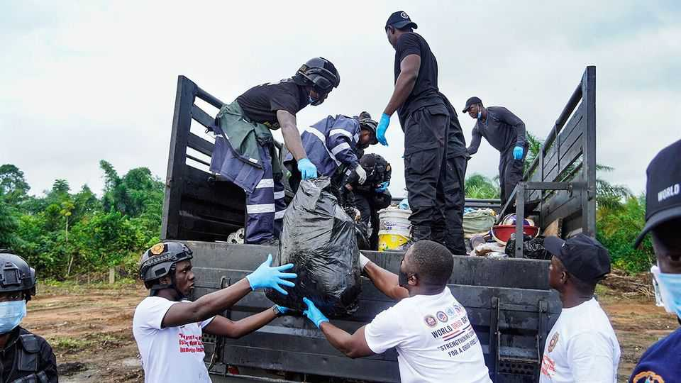
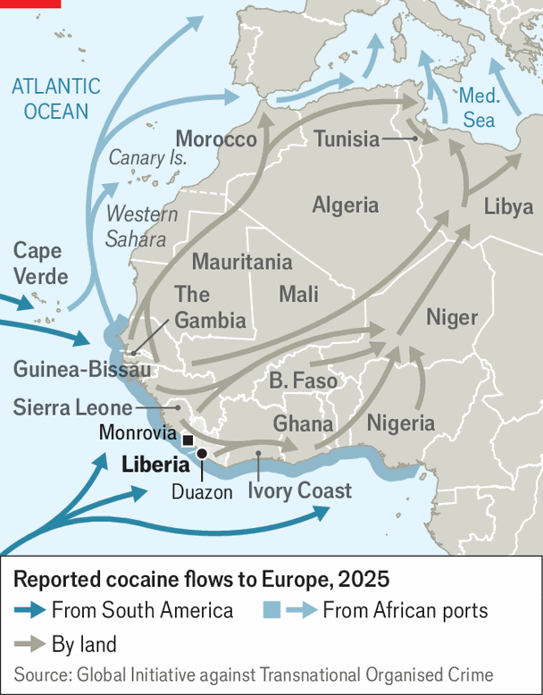

West Africa has become a huge cocaine-trading hub
Scrutiny of other routes has changed traffickers’ strategy for shipping to Europe

Jul 30th 2026
On July 21st Liberian police raided a bungalow in Duazon, a town between Monrovia, the capital, and its airport. Inside they found two men and hundreds of packages of white powder that were stacked up to the ceiling. They arrested the men, a Serbian and a Spanish-Colombian, and confiscated the packages. After two days of counting and testing they said they had seized nearly four tonnes of high-grade cocaine with a street value of around $317m (the wholesale value in Europe is lower at €50m-60m, or $57m-68m).
It was not even the biggest cocaine haul in Africa this year. In May a ship flying the flag of the Comoros islands was intercepted off the coast of Western Sahara carrying almost 31 tonnes of the drug, more than the 30 seized in west Africa in all of 2025. Between 2019 and 2025 the volume of cocaine seized in the region each year increased by 50%. The size of seized shipments has gone up, too: in 2025 the average haul on routes from the region weighed 5.6 tonnes, compared with 2.4 in 2024. In a few years, west Africa has become one of the biggest hubs sending cocaine to Europe.

The region has long been a convenient waypoint, about halfway between South America, where most cocaine is made, and Europe, where much of it is consumed (see map). Corruption and lousy policing have also helped. Jos Leijdekkers, a Dutch national and one of Europe’s most wanted drug traffickers, who is meant to be serving 24 years in a Dutch prison, is reportedly running a large trafficking network from Sierra Leone. The Netherlands has requested his extradition, to no avail. In recent years a boom in cocaine production, increased policing in Europe of shipments from South America and technological innovations by traffickers have increased both the amount of cocaine routed through the region and the number of countries implicated in the trade.
Traffickers now bulk-ship cocaine from South America to west Africa, where port controls are relatively weak. There, shipments are repackaged and loaded onto large “mother vessels”, before being moved to smaller high-speed boats known as “go-fasts” that hover around north Africa and the Canary Islands or on the high seas. The boats are too fast for most navies to intercept safely. They bypass European ports for beaches and makeshift jetties. Though the increasing number of successful drug busts suggests authorities have got better at intercepting the traffic, much still slips through the net. The EU’s Maritime Analysis and Information Centre (Narcotics) (MAOC-N), an enforcement body, reckons that over 100 tonnes of cocaine successfully made it from west Africa to European customers last year.
The region has become particularly attractive as a hub because European countries have cracked down hard on direct imports from countries such as Brazil, Guyana and Suriname, says Paulo Silva of MAOC-N. “It creates two points of departure which makes it much harder for us in Europe,” he says. “You cannot possibly go through everything coming from west Africa.” For drug traffickers, the route presents a “lower risk of disruption and seizure, which overall makes it cheaper”, says Lucia Bird of the Global Initiative against Transnational Organised Crime, an NGO.
The expansion of legal trade around the region is also helping the illegal sort. Ports, airports and land borders handle more cargo than they used to, so larger vessels carrying more drugs are easier to disguise. A former boss of Liberia’s Drug Enforcement Agency believes most cocaine enters the country by road from Sierra Leone, labelled as frozen food. Kingpins from the Balkans to Brazil can monitor in real time when containers are being loaded at port or transferred out at sea. Police involved in the Duazon raid found a Starlink router, a diving suit and waterproof GPS trackers that they suspect were used to keep the traffickers’ bosses in the loop.
Compared with previous decades, when the drug trade was centred in a handful of weak states such as The Gambia, Guinea-Bissau and Sierra Leone, it is increasingly pulling in other countries, partly thanks to Mr Leijdekkers. His presence in Sierra Leone means shipments from there now draw extra scrutiny from European authorities, prompting diversification to Ghana, Ivory Coast and Liberia. A 238kg shipment of cocaine (street value $19.2m) seized at Monrovia’s airport in June has been linked to the Dutch trafficker. Authorities in Ghana and the Netherlands say a 4.5-tonne haul originating in Ghana that was recently seized in Amsterdam was also moved by his network.
Despite the great fanfare accompanying each drug bust, west African countries are largely powerless to stop the thriving trade. Modern security technology is too expensive to employ widely at ports, airports and on the high seas. “We still do this 1940s style of security,” laments one activist in Monrovia. “Even sniffing dogs, we don’t have.” Scanners fail when there is no electricity. The perimeters of smaller airports are easily compromised.
So are officials with puny salaries (in Liberia some are paid barely $100 a month). “We have state actors that we’ve identified have been working with the cartel. We have officers that have been charged,” says Gregory Coleman, Liberia’s inspector-general of police. In Sierra Leone, Mr Leijdekkers seems to have successfully swayed the entire state. Cocaine demand in Europe continues to rise. For the cartels, the occasional bust is merely the cost of doing business. ■
Sign up to the Analysing Africa, a weekly newsletter that keeps you in the loop about the world’s youngest—and least understood—continent.